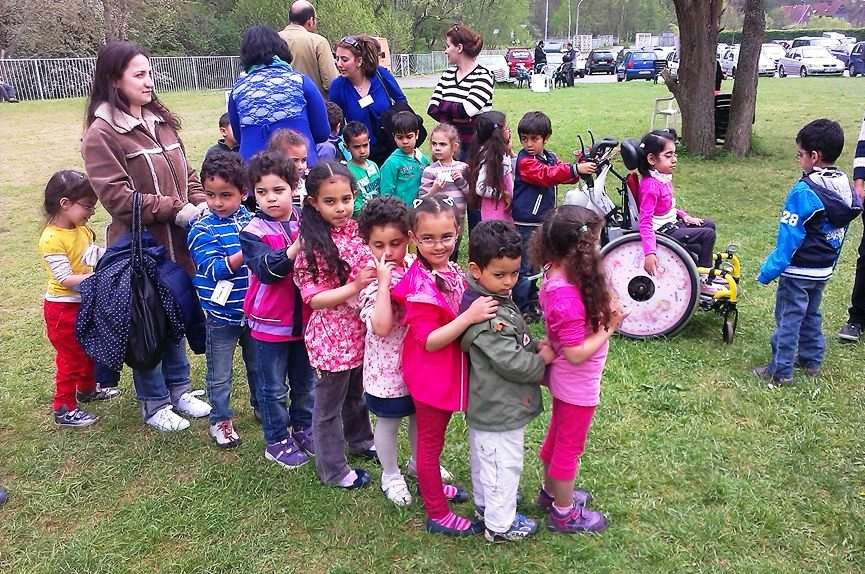
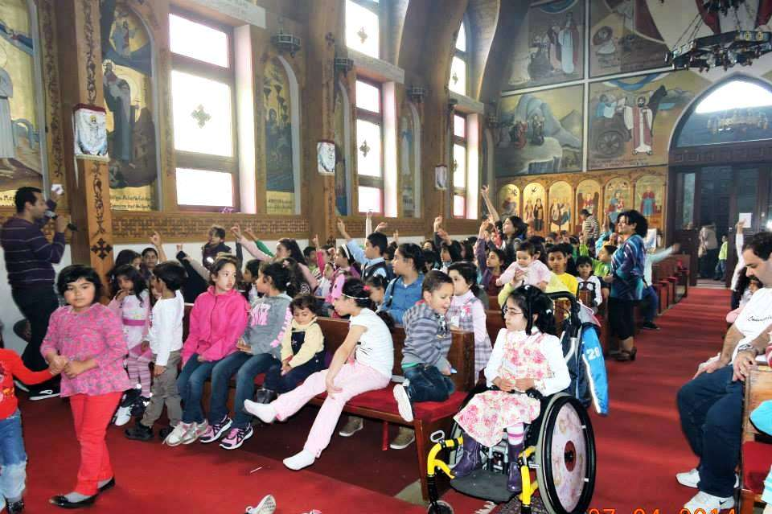

50 المؤتمر الخامس لألطفال 52 الى 52 ابريل 5102 بدير األنبا انطونيوس بكروفلباخ بالم انيا جرجس مارى استقبل ا أل نبا ميشائيل اطفال دير ا أل نبا انطونيوس و كنيسة مارمرقس المؤتمر الخامس ل أل طفل : ٠٦١ طفل الذي ن يتراوح اعمارهم ما بين الثالثة . و الثالثة ،عشر بعنوان اسرار الكنيسة السبعة / بلهفة شديدة توافد ا أل طفال يوم الجمعة 75.4 لحضورالمؤتمر و بد أوا بحفظ الشعار باللغتين القبطية و العربية و ت آل ها الدرس ا آل ول ( سر المعمودية + سر الميرون ) كما ختموا ا آل طفال يومهم ا آل ول . بعمل مخبوزات من البسكويت كما توجهوا في صباح اليوم الثاني الي الكنيسة لحضور القداس اآللهي و قام ا أل و إل د منهم بخدمة الشموسية . و اما ع ن الدرس الثاني ( سر التوبة و اإلعتراف ) تطبيقا لهذا الدرس ؛ فقد تفضل ا أل نبا ميشائي ل و القمص بيجول باخذ اعتراف ا تهم و اعتراف ا ت الخدام ايضا ١ و من درس و اعتراف و تركيز الى وقت المرح و المسابقات و اللعب و التنافس مع حفظ ايات جديدة مرتبطة با أل سرار . بعد الغذاء و قسط من الراحة توجه ا أل طفال الى الدرس الثالث ( سر التناول + سر مسحة المرضى . ) ثم جاء وقت الحرفية و ا أل عمال الفنية حيث القص و مسدسات الشماع و ا أل ستمتاع باعمال يديهم . و مع قرب انتهاء اليوم الثاني قام ا أل طفال بدعوة ا أل هالي ليت ذ وقوا ، البسكويت المخبوز بايدي او آل دهم كما قام بعض الخدام بعرض اسرار الكنيسة السبعة عن طريق مسرح خيال الظل المصطحب بال أل حان التصويرية لكل سر . وبص آل ة النوم ذهب ا أل طفال للنوم و انتهى اليوم الثاني ليبدأ اليوم ا أل خير من المؤتمر . و بدأ يوم ا أل حد كالعادة بالقداس اللهي الذي تميز بشرح سر التناول للطفل و بعد ،الفطار الدرس ا أل خير مع نيافة ا أل نبا ميشائيل ( سر الزيجة + سر الكهنوت ثم تقدم نيافته بتوزيع هدايا المؤتمر على جميع ا أل طفال . و انتهى المؤتمر بالصورة الت ذ كارية مع . سيدنا امام الكنيسة و من تعليقات ا أل طفال في نهاية المؤتمر " انا مش عايز اروح " ، " هو ليه مش حن ق عد تاني في المؤتمر؟ " ، " المؤتمر اللي جاي امتى؟ " ، " المؤتمر اللي جاي حيكون عن ايه؟ . " و بين سؤال وتعليق و افراح و اشواق انتهى المؤتمر الخامس بس آل م و فرح و حب . في انتظار اع آل ن . المؤتمر السادس انشاء هللا
St. Markus · 2014 · Deutsch
لمارى جرجس: المؤتمر الخامس لألطفال-
Ausgabe 2 · Seite 50

